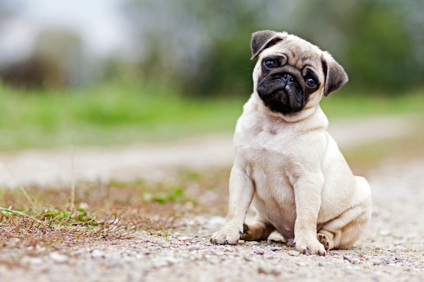
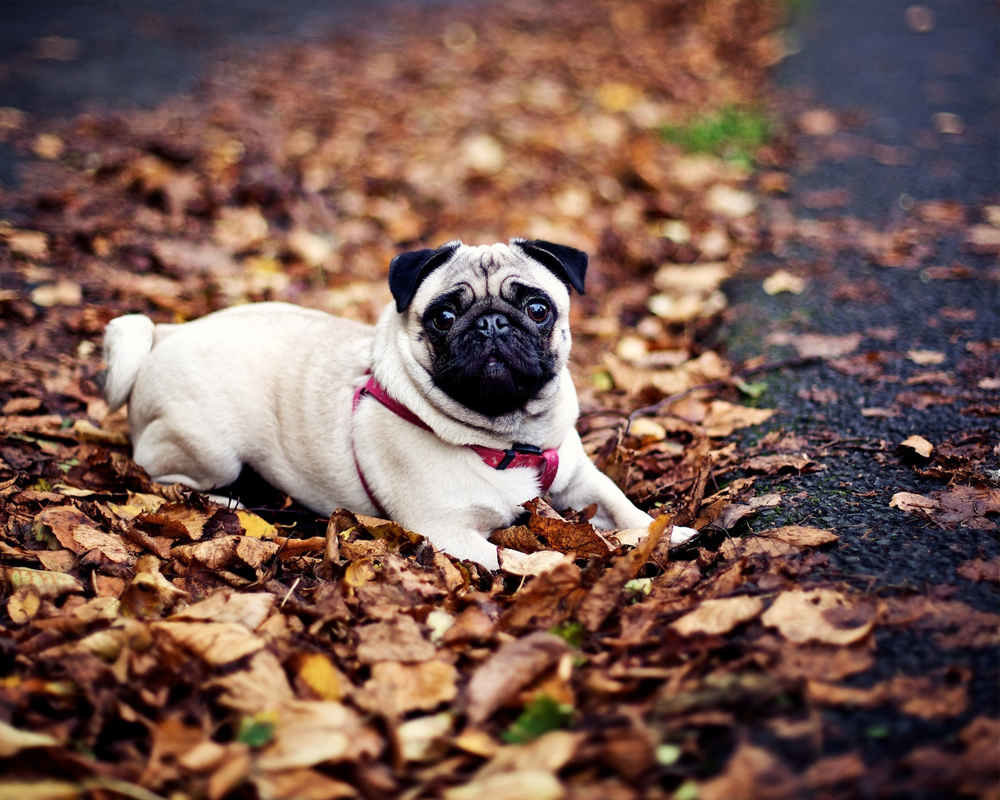

Мопси - собаки, які стануть справжніми друзями для всіх членів сім'ї
Мопс - одна з найдавніших порід собак. Більшість вчених сходяться на думці, що предки мопсів мешкали на Сході більше трьох тисяч років тому
Мопса неможливо сплутати ні з якою іншою собакою. Добре збите мускулисте тіло на коротких сильних лапах, плеската квадратна морда з характерними складками на щоках, розумний і теплий погляд величезних темних очей і море чарівності - ось, мабуть, найбільш ємний опис цієї породи.
Сьогодні мопси вважаються однією з найпопулярніших порід. Ці собаки є суто домашніми тваринами, які при правильному догляді доживають до 15 років.
Головна риса їх характеру - доброта. Собаки люблять бути в центрі уваги, але в той же час, можуть бути дуже ліниві.
Мопси, як і хаскі відрізняються особливим завзяттям, тому навчити їх командам буває непросто.
Вага: 6 - 8 кг. Зріст: 28 - 32 см
Плюси мопсів:
- Дуже ласкаві і доброзичливі;
- Прив'язуються до господаря;
- Люблять дітей;
- Доброзичливі до інших тварин;
- Легко доглядати;
- Можуть проживати в невеликій квартирі;
- Ідеальні друзі для осіб старшого віку;
- Майже не гавкають.
Мінуси мопсів:
- Часто проявляють впертість;
- Погано переносять спеку;
- Схильні до повноти;
- Линяють весь рік;
- Мають специфічний запах;
- Люблять хропіти.
Що потрібно купити для мопса
Отже, у вашому будинку з'явився мопс. Що ж в першу чергу потрібно придбати для собаки і як підготуватися до її появи у вашій родині?
- Миски - собаці їх потрібно дві: для води і корму. Вони бувають пластикові, керамічні, металеві. Також існують силіконові, які легко складаються і можуть стати незамінними під час прогулянок, коли собака хоче пити.
- Корм - поцікавтеся у заводчика або ветеринара які саме корми підійдуть для вашої собаки. Ветеринари рекомендують купувати корми Преміум-класу, в які входять всі необхідні мікроелементи і вітаміни.
- Іграшки - для маленького цуценяти і дорослої собаки потрібні іграшки, які допоможуть тварині скоротати самотність поки вас не буде вдома і вбережуть ваші меблі та взуття.
- Місце для сну і відпочинку - у собаки має бути місце для сну і відпочинку в будинку. А щоб їй було тепло, м'яко та затишно рекомендуємо придбати підстилку для собак, подушку або кошик.
- Повідець і нашийник
- Туалет - поки щеня буде рости, до моменту поки будуть зроблені всі щеплення, йому не можна буде гуляти на вулиці. Тому важливо облаштувати для нього спеціальне місце, де він зможе справляти свою нужду. Для цього підійдуть багаторазові пелюшки або спеціальні туалети для собак.
- Шампунь і кондиціонер
Догляд за мопсами
Мопси не пристосовані до життя на вулиці і можуть вижити тільки в домашніх умовах. Догляд за цими собаками не вимагає великих матеріальних вкладень, але від власників потрібна увага і час. Ці собаки мають на морді складки, які в спекотну погоду необхідно очищати ватними тампонами з перекисом водню. Після обробки їх посипають присипкою.
Вушка мопсів очищають ватяними дисками змоченими в спеціальних розчинах. Якщо собака постійно чеше вухо і в ньому з'явилася чорна грязь - необхідно звернутися до ветеринара щоб перевірити наявність вушного кліща.
Цуценят з раннього віку привчають до догляду за нігтями. Спочатку їх обрізають манікюрними ножицями, у міру дорослішання переходять на кусачки. Купати мопсів рекомендується не частіше 4-х разів на рік з використанням спеціальних шампунів і бальзамів. У догляді за шерстю використовують рукавички для груммінга.
У холодну пору року мопсів одягають в комбінезони або світшоти, щоб собака не переохолодилася і не захворіла.
Хвороби
В цілому, при правильному догляді мопси не часто хворіють. Однак ряд найбільш часто поширених захворювань повинен знати
кожен господар.
Найбільш поширені хвороби мопсів:
- Синдром сухого ока
- ожиріння
- захворювання шкіри
- алергії
- отити
- захворювання шлунково-кишкового тракту: гастрити і виразки
- мочекам'яна хвороба
Вакцинація
Перші щеплення мопсам роблять з 2-х місяців. Поки щеплень у собаки немає, гуляти з нею на вулиці не рекомендується. Перша вакцина ставиться від чуми, парвовіруса, гепатиту, парагрипу і аденовірусу. Ревакцинацію проводять в 3 місяці. В 6 місяців роблять вакцину від сказу.
Рекомендовані схеми вакцинації різними препаратами наступні:
Препарат Nоbivас:
- DНРРI + L - підшкірним введенням, в два місяці;
- DНРРI + L + R - підшкірним введенням, в три місяці;
- DНРРI + L + R - підшкірним введенням, в рік.
Купити якісну вакцину для мопсів можна на сайті belvet.ua.
Харчування мопсів
Через те, що мопси мають досить маленькі шлунки, до рідкої їжі вони не пристосовані. У разі порушення правильного харчування, в дорослому віці у собаки можуть бути проблеми з травленням.
У раціоні мопсів повинні бути присутніми злаки, нежирне м'ясо, фрукти, овочі, зелень і молочні продукти. Не рекомендується годувати собаку з загального столу. Заборонено давати кондитерські вироби, жирне, хліб, копченості, солоності і напівфабрикати.
Якщо ви віддаєте перевагу сухим кормам, віддавайте перевагу кормам супер-преміум класу. Не купуйте корм низької якості, постарайтеся не опускатися нижче преміум класу. Купити корм для мопса можна на сайті masterzoo.ua в розділі "Корм для собак".